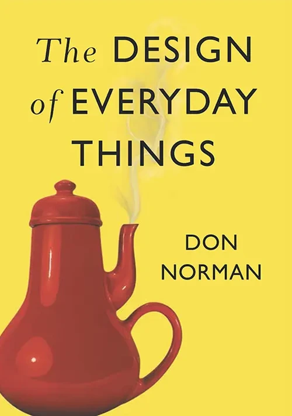
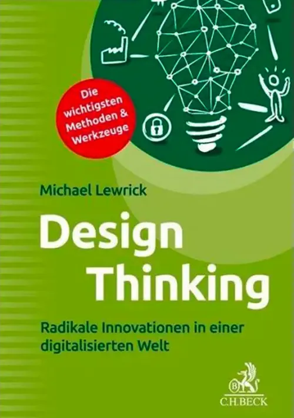
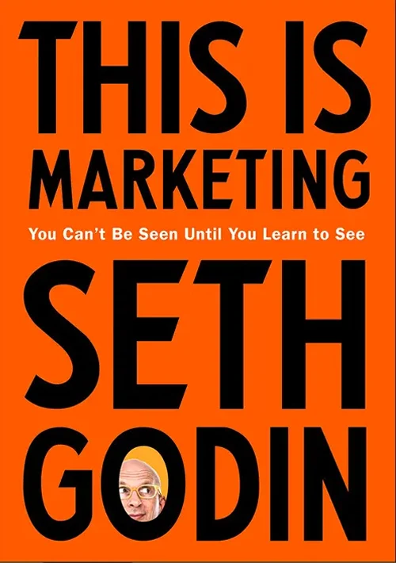

In meinem bunten Lebensweg gab es immer zwei Konstanten: kreatives
Arbeiten und technische Andwendungen. Seit über 20 Jahren verbinde
ich visuelle und akustische Facetten mit digitalen Werkzeugen.
Die Schönheit von Form und Farbe sowie der Hörgenuss Ton und Musik
lassen sich in Frequenzen beschreiben. Dabei habe ich schon früh
gelernt mein Publikum mit auf eine Reise zu nehmen. Digitales
Geschichtenerzählen ist meine Leidenschaft.
Bücherliste
Eine Auswahl der Bücher, die ich zuletzt in den Händen hatte.
Lesen begeistert mich, lesen entspannt.
Viele Inspirationen für meinen Job und mein Leben kamen von guten
Autoren und deren Werken.
Javascript - The Definitive Guide
David Flanagan
Clean Code
Robert C. Martin
The Design of Everyday Things
Don Norman

Design Thinking
Michael Lewrick

7 Strategies for Wealth and Happiness
Jim Rohn

This is Marketing
Seth Godin
